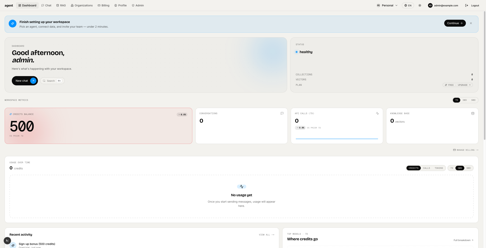
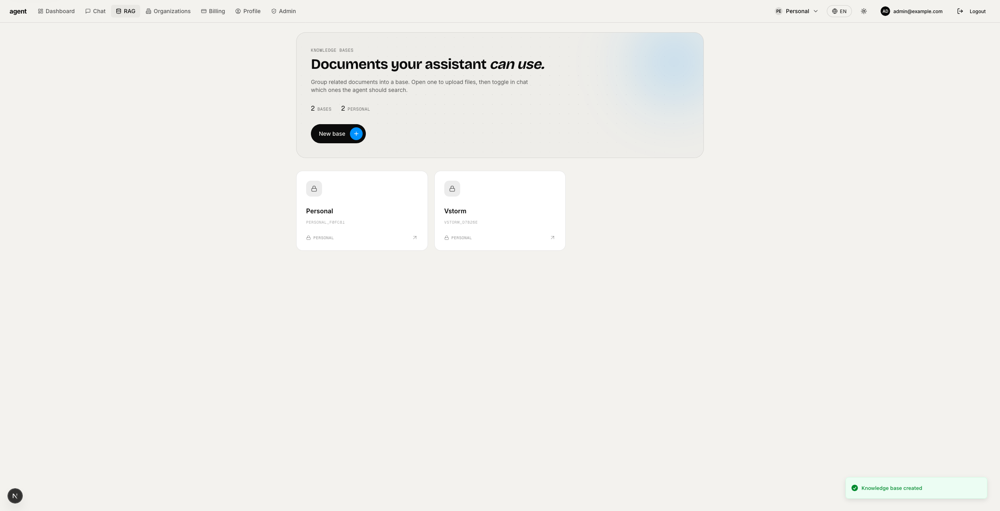
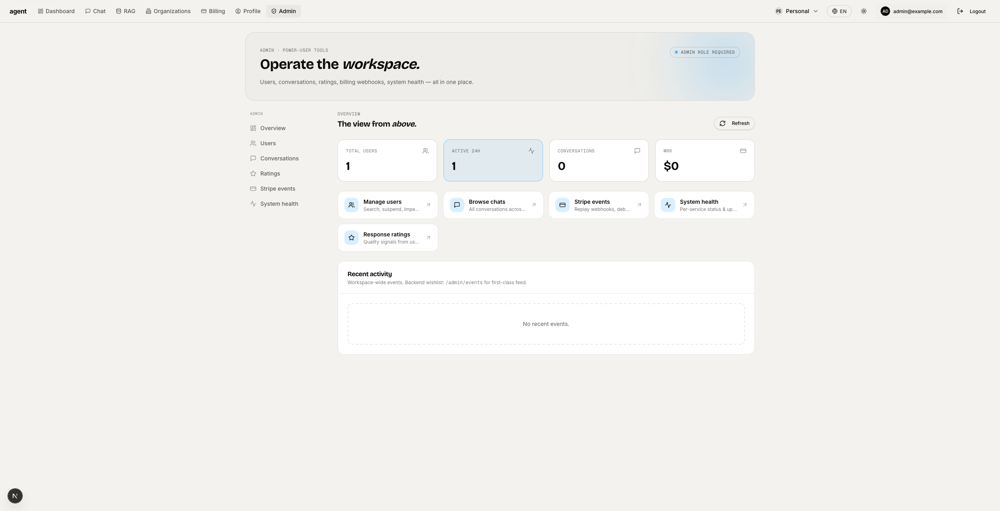

01
多 Agent 框架选择
PydanticAI、PydanticDeep、LangChain、LangGraph、CrewAI、DeepAgents 可在生成时选择，覆盖类型安全助手、ReAct 工作流和多 Agent 协作。
这个仓库的重点不是给你一个最小 FastAPI 示例，而是把 AI SaaS 常见的后端、前端、数据、运维和安全路径提前铺好。
PydanticAI、PydanticDeep、LangChain、LangGraph、CrewAI、DeepAgents 可在生成时选择，覆盖类型安全助手、ReAct 工作流和多 Agent 协作。
支持 Milvus、Qdrant、ChromaDB、pgvector，包含文档解析、chunking、embedding、reranking、同步源和知识库前端。
FastAPI 后端配合 Next.js 15 前端，带 WebSocket 流式聊天、会话持久化、文件上传、管理台、定价页和用户设置。
JWT、OAuth、组织团队、Stripe 计费、Redis、Celery/Taskiq/ARQ、Slack、Telegram、Docker、Kubernetes 都有生成路径。
PydanticAI 走 Logfire，LangChain/LangGraph/DeepAgents 走 LangSmith，Agent run、tool call、HTTP、数据库链路都能追踪。
CLI、Pydantic 配置模型、Questionary prompts、Cookiecutter 模板和 post-gen hook 分层明确，方便继续扩展新选项。

`fastapi_gen` 负责收集配置、校验选项并驱动 Cookiecutter；`template/` 负责产出最终应用。新增数据库、向量库或 Agent 能力时，修改面可以被明确定位。
交互式 wizard 适合探索配置；显式 CLI 参数适合团队复现和 CI 脚本。
# install
uv tool install fastapi-fullstack
# interactive wizard
fastapi-fullstack
# explicit project generation
fastapi-fullstack create my_ai_app \
--database postgresql \
--frontend nextjs \
--rag \
--task-queue celery
# generated project
cd my_ai_app
make bootstrap

AI chatbot、企业知识库、内部运营助手、RAG 搜索产品、多租户 SaaS、需要可观测性的 Agent 应用，以及希望快速拥有生产级骨架的团队。
新 CLI 选项从 `config.py`、`prompts.py`、`cookiecutter.json` 进入模板；新增向量库或 sync connector 则沿着 RAG 抽象和 post-gen cleanup 接入。